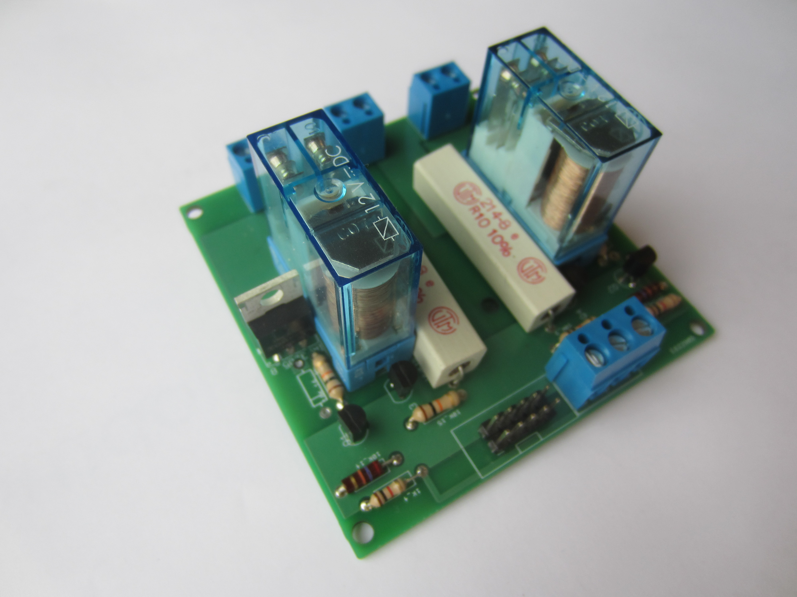
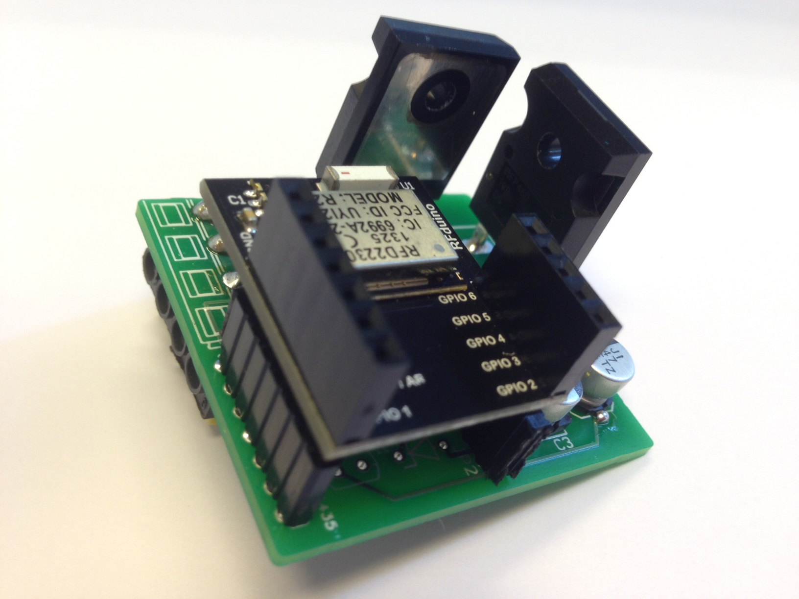

DoBots offers an autopilot for a cleaning machine. A scrubber/dryer requires a cleaning person to walk behind it. DoBots provides an add-on to a robot, a so-called autopilot, to upgrade a machine to a fully autonomous robot.
An autopilot is a package with sensors, controllers, and algorithms that allow a machine to fully autonomous navigate through a room. The machine does not need to run autonomously, but can also be controlled manually, or by remote. The autopilot also knows the state of the batteries, the reservoirs, and can send cleaning performance reports.
Read more at the page about the autopilot.
An early prototype of one of the motor controllers we built. The complete autopilot contains also 3D depth sensors, motor current sensors, a mother board, and other sensors and electronic components.

DoBots offers an interesting component to a Smart Building, the Crownstone, a Bluetooth Low-Energy switching block that can be embedded everywhere in a building. Not only can people use their smartphones to control every wire in the building, but also the building knows where the people are.
The Crownstone allows for services in buildings by people and for people. Bluetooth is an integral part to this strategy, because it demonstrates the seamlessness with which building automation will be integrated with smartphone solutions.
Read more at the page about the crownstone.
An early prototype of one of Crownstones we built. The final Crownstone will be even smaller in size: three sugar cubes.

Please, contact for information about our products. We are working according to agile principles, so our developments go really fast. We can tell you much more on a personal basis.